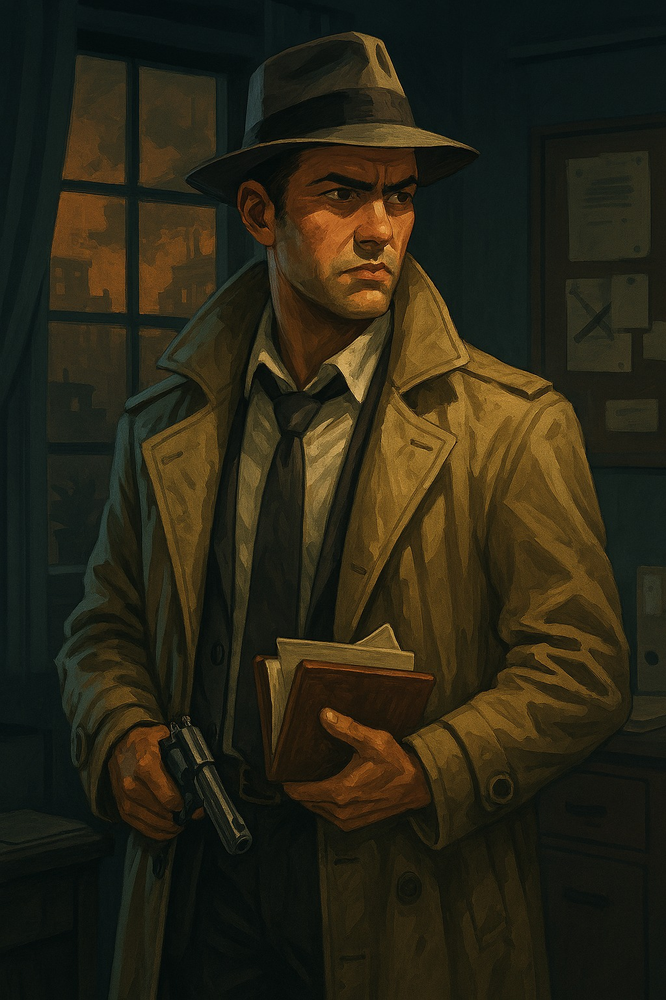

Selección de Personaje

El culpable arrepentido
Nombre:
Iván Delacroix
Origen:
Marsella, 1787
Ocupación:
Detective de homicidios
Nacido en el puerto viejo, entre el olor a salitre y los ecos de la Revolución. A los 19 años ingresó a la Gendarmería Real como investigador de crímenes violentos. Desarrolló su carrera en París, donde aprendió que los callejones hablaban más que los testigos.
En 1825, investigó el asesinato de Éloïse Marchand, una joven periodista que escribía panfletos contra la nobleza restaurada. Iván siguió pistas que lo llevaron a un salón aristocrático, pero la presión política lo obligó a cerrar el caso sin culpables. Esa noche, dejó su placa sobre el escritorio y se retiró. Desde entonces, su pipa permanece apagada, y su reloj de bolsillo — herencia de su padre — marca siempre la hora del crimen.
Cuatro años pasaron y un nuevo asesinato en Lyon lleva la misma firma: una nota escrita con la misma caligrafía, una víctima con vínculos al pasado. Iván, ya retirado, viaja en diligencia con su abrigo gris, su corbata desajustada, y sus ojos hundidos en sombras. No busca justicia. Busca redención. Y si no la encuentra, al menos quiere que la verdad se escriba en tinta indeleble.